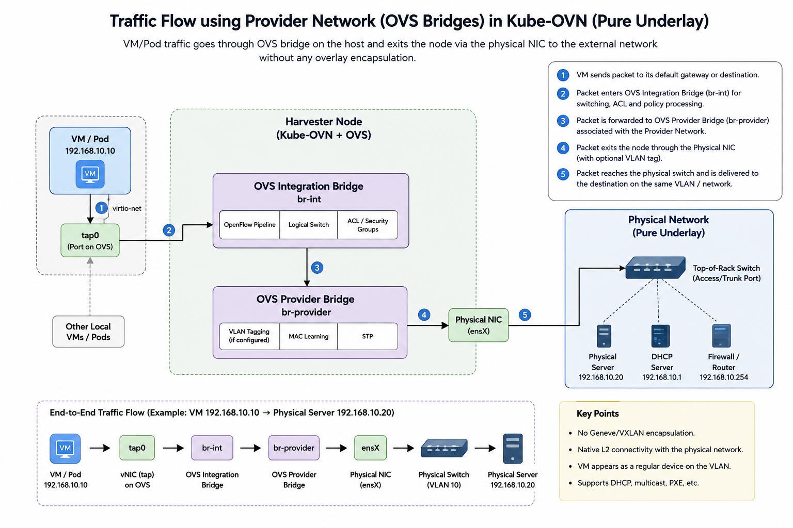
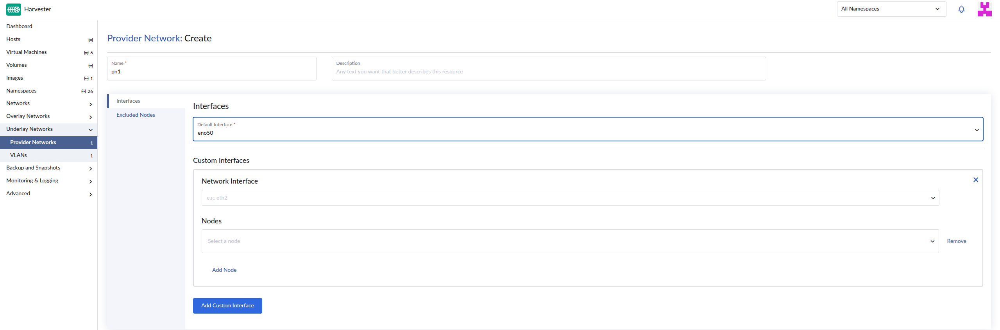
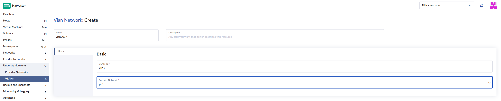
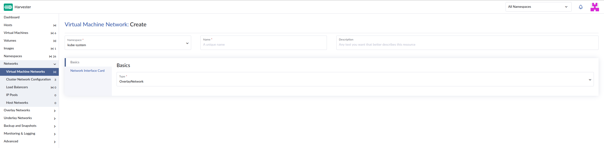
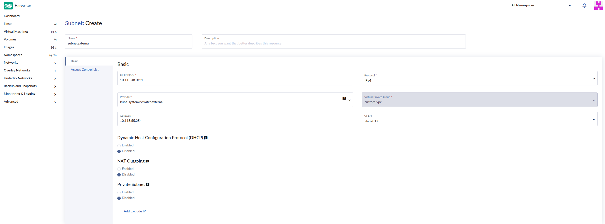

|
This is unreleased documentation for SUSE® Virtualization v1.9 (Dev). |
Pure Underlay Networking
|
All features that use Kube-OVN are considered experimental. For more information about experimental features, see Feature Labels. |
A pure underlay network allows virtual machines to connect directly to a physical Layer 2 network without overlay networking and the encapsulation overhead of technologies such as VXLAN or Geneve. Each virtual machine becomes a first-class member of the external network, communicating natively using standard Ethernet frames.
In SUSE Virtualization, this direct connectivity is achieved by attaching virtual machines to a provider network, which maps a physical NIC or bonded interface on each host to the cluster. Traffic leaves the virtual machine through the host’s physical interface and reaches the external network immediately, bypassing overlay tunnels completely.

Kube-OVN underlay mode
While traditional VLAN networking already enables virtual machines to communicate directly with the physical infrastructure, Kube-OVN’s Underlay mode extends this capability by embedding native Layer 2 connectivity directly into the OVN networking control plane. This deep integration allows workloads to leverage your existing physical underlay infrastructure while coexisting seamlessly with standard overlay networks inside the same Kubernetes cluster.
Furthermore, integrating Kube-OVN’s underlay capabilities into SUSE Virtualization ensures that virtual machines connected to the physical network do not lose their cloud-native security features. Workloads can still benefit from advanced micro-segmentation capabilities, including subnet ACLs and granular network policies, allowing you to maintain strict traffic control across both virtual and physical network boundaries.
Underlay configuration
Creating a provider network
-
On the SUSE Virtualization UI, go to Underlay Networks → Provider Networks.
-
Click Create.

-
Specify a unique name for the network.
-
On the Interfaces tab, configure the following settings:
-
Default Interface: Select a physical or bonded interface that is present on every host in your cluster. This interface acts as the main uplink connecting all nodes to the provider network.
-
Custom Interfaces: (Optional) Configure a custom interface if your hosts do not have identical network interface names. You can manually map specific interface names to their corresponding nodes to ensure consistent network connectivity.
-
-
(Optional) On the Excluded Nodes tab, select nodes that should not participate in this provider network (for example, nodes that are isolated for dedicated tasks).
-
Click Create.
For more information, see Create Provider Network in the Kube-OVN documentation.
Creating a VLAN
-
On the SUSE Virtualization UI, go to Underlay Networks → VLANs.

-
Click Create.
-
Specify a unique name for the network.
-
On the Basic tab, configure the following settings:
-
VLAN ID: Specify the VLAN tag number for this network. Traffic passing through this network will automatically be tagged with this ID. If you do not want traffic to be tagged, set the value to
0. -
Provider Network: Select the underlying provider network. You can map multiple VLANs to the same provider network to segregate traffic over the same physical infrastructure.
-
-
Click Create.
For more information, see Create VLAN in the Kube-OVN documentation.
Creating an overlay network
Follow the instructions in Creating an overlay network.

|
When setting up a pure underlay, the overlay network must use the following configuration:
|
Creating a subnet in a VPC
For descriptions of settings that you must configure, see Subnet Settings.

|
When setting up a pure underlay, you must specify the name of the VLAN network that is mapped to the provider network. |
Connecting virtual machines to the underlay
You can create virtual machines and attach them directly to a VLAN Network mapped to the configured provider network. These virtual machines can communicate with other virtual machines on the same subnet and route traffic directly to external networks via the physical infrastructure.
For more information, see Create a Virtual Machine.